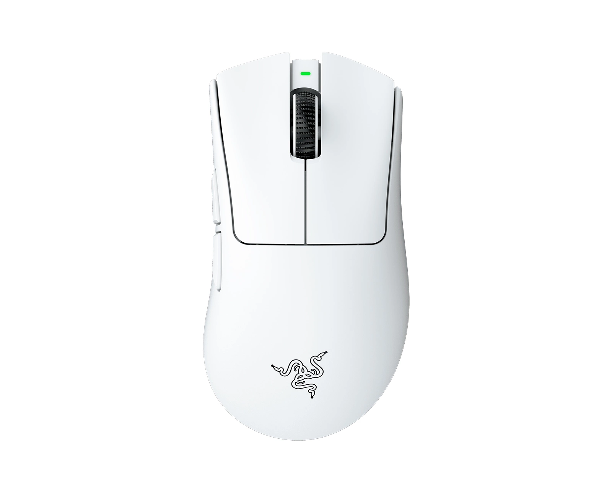
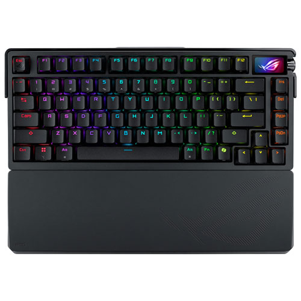
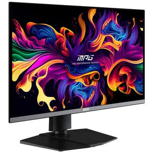
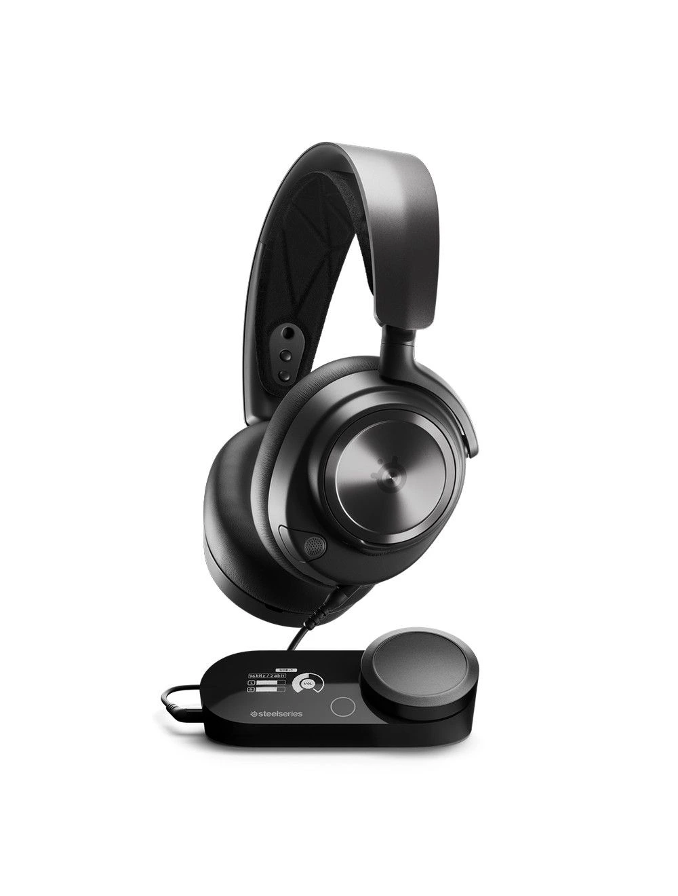

| Ralph's Gaming Accessories | ||||
|---|---|---|---|---|
|
The newest, top-tier Razer mice as of late 2025/early 2026 are the Razer DeathAdder V4 Pro (ultra-lightweight ergonomic), Razer Viper V3 Pro (high-performance symmetrical esports), and the Razer Basilisk V3 Pro 35K (feature-packed ergonomic). The Razer Boomslang 20th Anniversary Edition is also a recent, specialized, high-end release. Price: PHP 11,250  |
The ASUS ROG Azoth Extreme is a premium 75% hot-swappable mechanical keyboard featuring a durable aluminum-alloy chassis, a carbon-fiber plate, and a full-color OLED touchscreen with a 3-way knob. It supports tri-mode connectivity (2.4 GHz SpeedNova, Bluetooth, USB) with a true 8000 Hz polling rate, adjustable gasket mount, and pre-lubed ROG NX Snow/Storm switches. Price: PHP 27,900  |
|||
|
The MSI MPG 271QRX QD-OLED is a 26.5-inch flat gaming monitor featuring a 2560x1440 (WQHD) QD-OLED panel with a blazing 360Hz refresh rate and 0.03ms (GtG) response time. It boasts 99% DCI-P3 color coverage, 1000-nit peak HDR brightness, VESA DisplayHDR True Black 400, and comprehensive connectivity including HDMI 2.1, DisplayPort 1.4a, and 90W USB-C. Price: PHP 49,995  |
The SteelSeries Arctis Nova Pro Wireless is a premium, multi-system gaming headset (PC, PS5/PS4, Switch, Mobile) featuring 40mm Neodymium drivers, Active Noise Cancellation (ANC) with Transparency Mode, and a hot-swappable dual-battery system providing up to 44 hours of battery life. It supports simultaneous 2.4GHz and Bluetooth 5.0 connectivity via a wireless base station with an OLED screen. Price: PHP 23,845  |